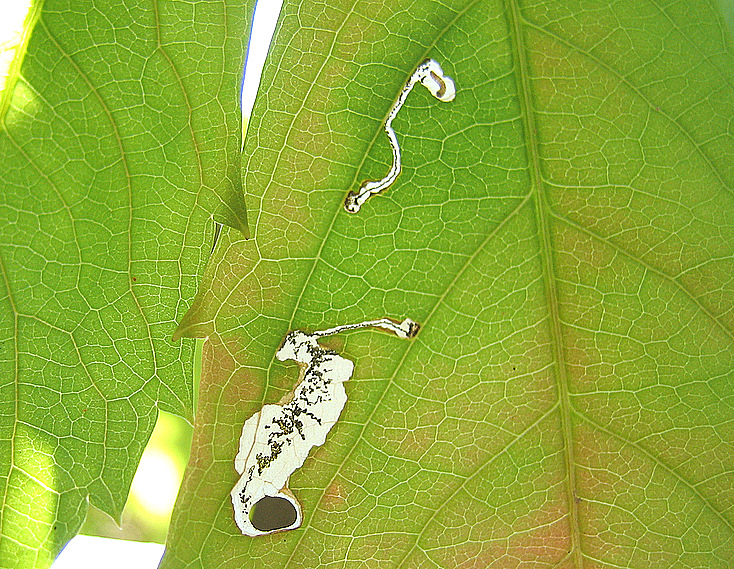
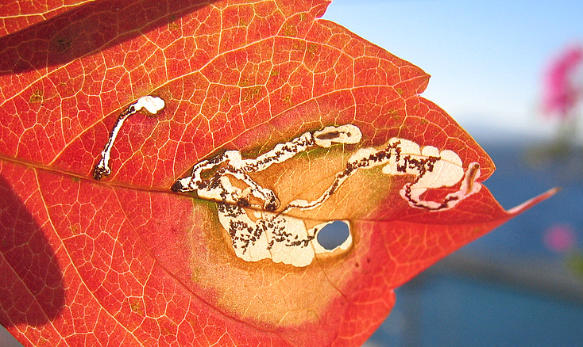

| PHRYGANA | Fauna | Flora |
additions nouveautés |
espèces species |
contact -
info - commentaires phrygana1 (at) gmail.com |
| diversité crétoise -- Cretan diversity | |||||
| Holocacista rivillei (Stainton 1855) |
| 26 | Fauna | HELIOZELIDAE | Holocacista |
 Holocacista rivillei feuille minée de Parthenocissus quinquefolia Agia Galini 27 octobre 2006 |
| Envergure: 3 - 4 mm |
| La chenille est oligophage: diverses Vitaceae dont Parthenocissus quinquefolia (la Vigne-vierge - Virginia Creeper) |
| Larve mineuse: les œufs sont pondus généralement un par un (mais en cas de pullulation, on peut trouver plusieurs dizaines de mines par feuille) sur la face supérieure de la feuille, toujours près d'une nervure. L'œuf est blanc. La larve creuse une galerie sinueuse qui s'élargit lentement jusqu'à former une petite vésicule. Le 'frass' (les déchets) est déposé en grains groupés en une petite bande irrégulière plus ou moins large au centre de la galerie. Lorsque la larve est au bout de son développement, elle se tisse un cocon de soie dans la mine et découpe un ovale dans la feuille pour en faire un fourreau. Le fourreau est souvent attaché à la feuille par un fil de soie mais il arrive très souvent que le fourreau tombe sur le sol ou soit emporté par le vent. La larve est jaunâtre avec une tête brune et connaît 4 instars. Elle se chrysalide dans le cocon. Il y a 3 à 5 générations annuelles. |
| Espèce plurivoltine avec des périodes de vol en mai juin juillet août septembre octobre. |
| Statut en Crète: indigène -- native |
| Biotopes en Crète: vignobles, jardins. |
| Distribution: Europe méridionale, Asie mineure, Moyen-Orient. |
| Note: Holocacista rivillei peut être une nuisance sur les Vignes en abîmant le feuillage. |
|
 Holocacista rivillei feuille minée de Parthenocissus quinquefolia Agia Galini 27 octobre 2006 |
| 22 septembre 2010 |
| © paul fontaine -- © Phrygana.eu 2007 -- 2013 |